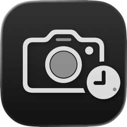
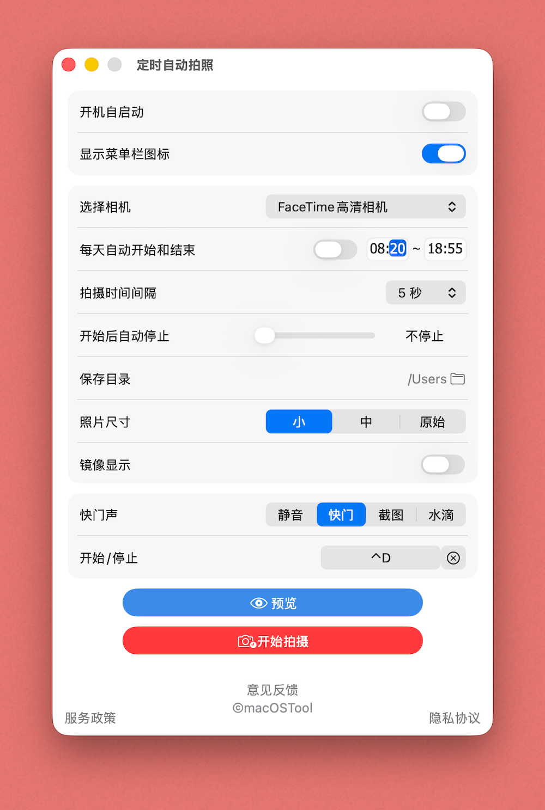
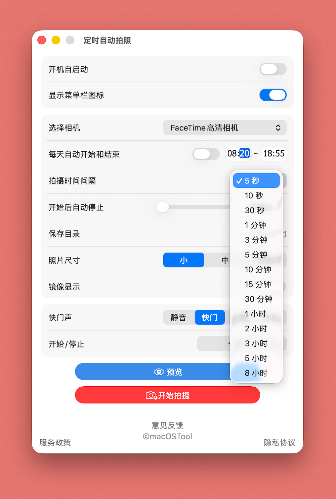
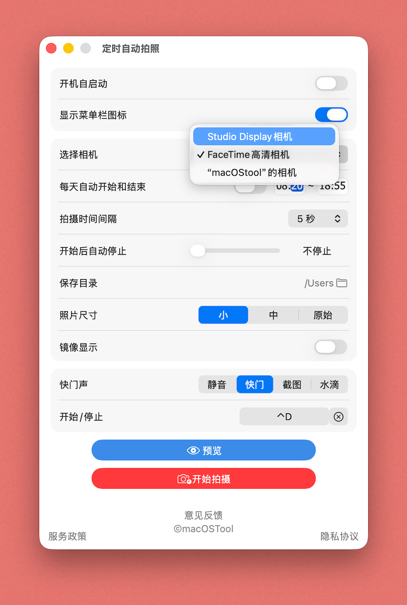
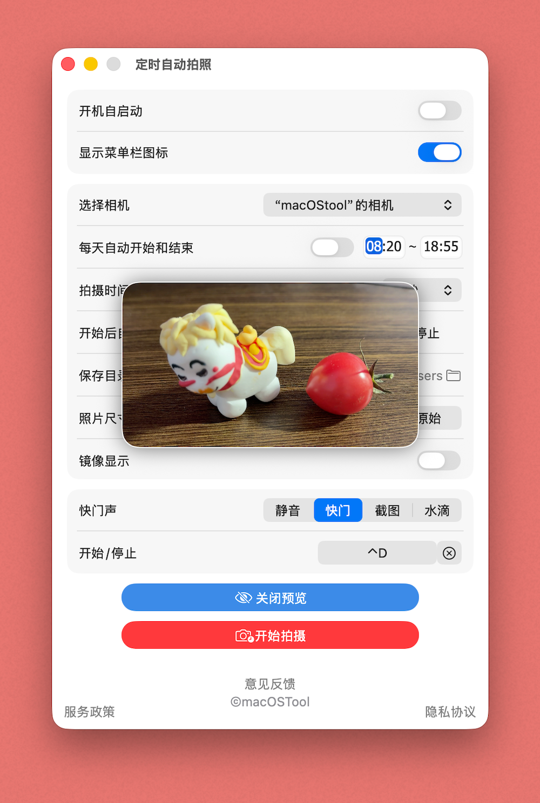
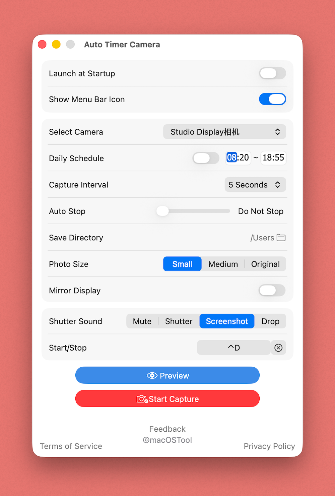
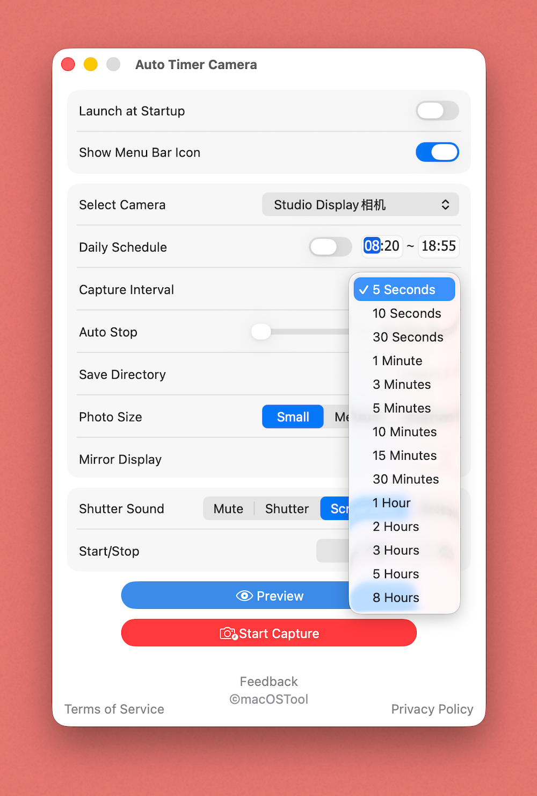
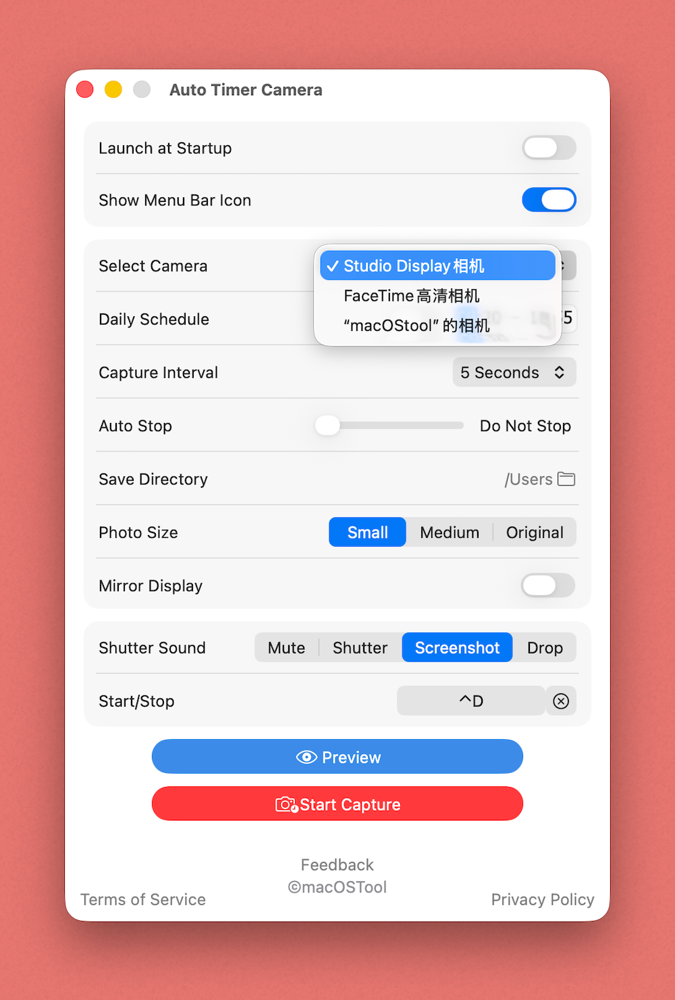
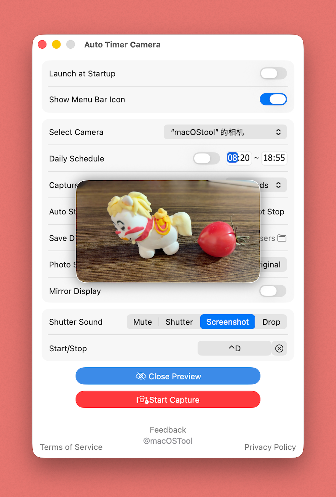

iAutoCapture
全定时自动拍照工具
Fully Auto Timer Camera

功能介绍
Features
自动化定时拍照工具
无论你是想记录工作台的延时摄影、追踪植物的生长过程、进行日常的习惯打卡，还是需要一个安静的后台拍摄助手，它都能完美胜任。
我们专注于“无感运行”与“高度定制”。
一旦设置完毕，它就会像隐形助手一样在后台默默工作。即使重启电脑，它也能精准记住你的所有配置与拍摄状态，绝不漏拍任何一个重要瞬间！

设置
【灵活强大的拍摄计划】
- 超宽跨度的拍摄间隔：从高频的 5 秒、10 秒，到长线的 30 分钟，甚至长达 8 小时，满足从延时摄影到长期记录的任何需求。
- 智能日程表：自定义“每日自动开始”与“自动结束”时间（例如仅在工作日 9:00 - 18:00 运行），无需每天手动开关。
- 限量拍摄模式：支持设定拍摄 1~200 张后自动暂停，防止照片泛滥，精准控制素材量。
- 秒级响应引擎：点击“开始”瞬间立刻抓拍第一张。拥有强大的状态记忆功能，即使重启 App 或 Mac，拍摄状态也不会中断或重置。

支持丰富的定时时间间隔
【隐形且纯净的体验】
- 常驻状态栏：通过顶部菜单栏轻松控制“开始/停止拍摄”或进入“设置”。
- 极简沉浸模式：嫌菜单栏太拥挤？你可以选择彻底隐藏菜单栏图标，让 App 在后台完全隐形静默运行。
- 开机自启动：配置好后即可做到“设置一次，忘掉它的存在”。
- 全局快捷键：无论你在使用什么软件，按下专属快捷键即可一键启动或暂停定时拍摄。
【井井有条的文件管理】
- 自动按天归档：照片会自动存入以“日期”命名的独立文件夹中，后期整理找图一目了然。
- 一键直达：在设置中点击路径，即可瞬间在 Finder 中打开当天的照片目录。
- 三种画质选择：支持保存为“小、中、原始尺寸”，帮你完美平衡照片清晰度与硬盘空间。
【丰富的个性化配置】
- 多相机支持：完美支持 Mac 内置摄像头及外接 USB 相机/iPhone 连续互通相机。
- 多种快门提示音：内置 3 款精心挑选的拍摄提示音，让你在后台拍摄时既有安全感又不会被打扰（当然也可以静音运行）。

支持多设备与相机列表选择

清晰的实时预览界面
Automated Time-Lapse & Photo Capture Tool
Whether you want to record a time-lapse of your workspace, track plant growth, build daily habits, or just need a quiet background camera assistant, it handles it all perfectly.
We focus on "invisible operation" and "high customization."
Once set up, it works silently in the background like a hidden assistant. Even if you restart your computer, it accurately remembers all your configurations and shooting status, never missing a single important moment!

Settings
[Flexible & Powerful Shooting Plans]
- Ultra-wide shooting intervals: From high-frequency 5 or 10 seconds to long-term 30 minutes, or even up to 8 hours. Meets any need from time-lapse photography to long-term recording.
- Smart Schedule: Customize "Daily Auto-Start" and "Auto-Stop" times (e.g., run only on weekdays 9:00 - 18:00), eliminating the need for manual daily toggles.
- Limited Capture Mode: Support setting an auto-pause after capturing 1~200 photos to prevent photo flooding and precisely control your media volume.
- Second-Level Response Engine: Instantly captures the first photo the moment you click "Start." Features powerful state memory—even if you restart the App or your Mac, the shooting status won't be interrupted or reset.

Supports Various Timer Intervals
[Invisible & Pure Experience]
- Menu Bar Resident: Easily control "Start/Stop Capture" or access "Settings" right from your top menu bar.
- Minimalist Immersive Mode: Find the menu bar too crowded? You can completely hide the menu bar icon, letting the App run entirely invisible and silently in the background.
- Launch on Startup: Set it up once and forget it exists.
- Global Hotkeys: No matter what software you are using, press the dedicated hotkey to start or pause the scheduled capture with one click.
[Organized File Management]
- Auto Daily Archiving: Photos are automatically saved into independent folders named by "Date," making later organization and searching clear at a glance.
- One-Click Access: Click the path in settings to instantly open today's photo directory in Finder.
- Three Quality Options: Choose to save in "Small, Medium, or Original Size," helping you perfectly balance photo clarity and hard drive space.
[Rich Personalized Configurations]
- Multi-Camera Support: Perfectly supports the Mac built-in camera, external USB cameras, and iPhone Continuity Camera.
- Multiple Shutter Sounds: Includes 3 carefully selected capture sounds, giving you a sense of security while shooting in the background without being disturbed (you can also run it completely muted).

Supports Multiple Devices and Camera Selection

Clear Real-Time Preview Interface